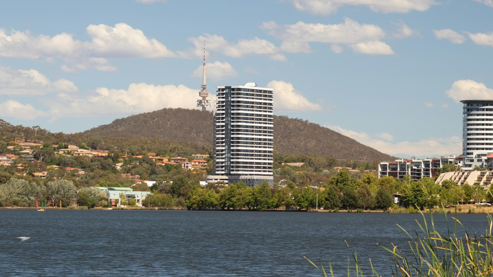

For a Canberra retaining wall enquiry, start with three facts: what the wall must retain, where water can lawfully go, and what sits near or above the wall. The source guide identifies eight project routes, including concrete sleeper, timber sleeper, reinforced block, stone and boulder, gabion, drainage, engineered work and repairs. A 1.2 metre wall is not judged by height alone, because location, easements, structures and exemption conditions can change the approval question.
For homeowners comparing retaining walls canberra options, the useful starting point is the actual site condition, not the face material or a generic landscape preference.
Retaining Walls Canberra Explained
Retaining Walls Canberra frames retaining work around three practical questions: what the wall must retain, where water can safely go, and what sits close to or above the wall. That order is useful because a neat wall face cannot solve the wrong load, missing drainage path or approval issue.
The published guide asks for wall condition, dimensions, access and drainage notes before a first review. Photos from both ends, where safe, help show leaning, bulging, cracking, rot, corrosion and water marks. Notes about what happens after rain can be more useful than a broad request for a replacement wall.
For a second local perspective on the same topic, this Canberra retaining wall planning guide keeps the focus on wall scope rather than generic landscaping.
What Changes The Scope
Retained height and length matter, but they are only part of the brief. The source guide also points to driveways, buildings, fences, steep banks and a second wall behind the first as details that can affect footing, post design, engineering and access.
Drainage is treated as part of the wall brief rather than an afterthought. Aggregate, filter separation and a subsoil drain only work when the site has a lawful, practical discharge route. If the enquiry does not say where water goes now, the first conversation may stay too vague.
- Record the approximate retained height and length.
- Note nearby structures, fences, driveways, steep banks and other walls.
- Describe access for materials, spoil removal and machinery.
- Include visible water marks, wet ground or post-rain changes.
Choosing Between Wall Types
The source guide lists several routes because different sites ask different things of a wall. Concrete sleeper systems are presented for durable garden, boundary and level-change work. Timber sleeper options are described for suitable lower garden terraces, stepped beds and straightforward landscape briefs.
Reinforced block walls are positioned for engineered loads, crisp finishes and integrated landscape structures. Stone and boulder walls suit landscape-led projects where mass, drainage and site access fit the system. Gabion walls are described as rock-filled basket systems for textured and free-draining applications when foundations and filter separation are correct.
Repair and replacement assessment is its own route. Movement may relate to water pressure, decayed timber, corroded posts, insufficient embedment, changed loads or ground movement, so the visible lean may not be the whole problem.
Approval And Easement Questions
The guide separates building approval, development approval and stormwater-easement questions. It says ACT Planning publishes building approval exemption conditions under Schedule 1, and that development approval may still be relevant depending on fill, cut-in, combination walls and boundary-related limits.
Height alone is not treated as the answer. The guide notes that building approval guidance measures from the top of the wall to the lowest adjacent ground level, while development approval guidance also uses datum ground level for some tests. A wall near a stormwater easement may require a site plan and special engineering so footings clear and do not load the stormwater asset.
Before work starts, ask which approvals or exemptions are being relied on, what measurement method is being used, and whether any easement or stormwater constraint appears on the site information.
Who This Applies To
This guide is most relevant for Canberra owners planning a new wall, replacing a leaning or failed wall, or trying to understand whether a simple-looking garden level change needs more careful scoping. It is also useful where access is tight, the wall sits near a boundary, or another structure sits above or close to the retained ground.
It is less useful as a price guide because the supplied source does not publish fixed rates. For budgeting, use the enquiry process to define materials, retained height, length, access, drainage, engineering and approval inputs before comparing quotes. ASIC Moneysmart's renovation guidance is a sensible independent source for thinking about renovation budgets, contracts and payment decisions.
- Record the wall. Measure the approximate retained height and length, then photograph the wall from both ends where safe.
- Map the surroundings. Note driveways, buildings, fences, steep banks, nearby walls and any stormwater or easement concern.
- Describe the water path. Explain what happens after rain and where drainage could lawfully discharge.
- Ask the approval questions. Confirm whether building approval, development approval or easement checks apply to the actual proposal.
- Compare scoped options. Review wall material, drainage, access, engineering and repair or replacement logic before choosing a finish.
| Option | Where it may fit | Question to confirm |
|---|---|---|
| Concrete sleeper | Garden, boundary and level-change work | What load, height and post design does the site need? |
| Timber sleeper | Lower terraces, stepped beds and straightforward briefs | Is timber suitable for the retained height and site condition? |
| Reinforced block | Engineered loads and integrated landscape structures | What engineering and approval inputs apply? |
| Stone, boulder or gabion | Landscape-led or free-draining applications | Do access, foundations and filter separation suit the system? |
| Repair or replacement | Leaning, bulging, cracked, corroded or rotted walls | Is movement caused by water, decay, embedment, load change or ground movement? |
Common questions
Do I need approval for a Canberra retaining wall? It depends on the actual proposal. The source guide says building approval, development approval and stormwater-easement questions are separate, and that height, location, exemption conditions and nearby structures can change the answer.
Is a 1.2 metre wall automatically approved or exempt? No. The guide uses 1.2 metres as an example where height alone is not enough. Location, easements, other structures and exemption conditions still need checking.
What information should I send before asking for a quote? Send suburb or postcode, dimensions, access constraints, drainage symptoms and photos. The source guide says those details help a contractor discuss the next step from the real site.
Can a leaning wall just be repaired? Sometimes repair may be considered, but the source guide says visible lean may not be the whole problem. Movement can follow water pressure, decayed timber, corroded posts, insufficient embedment, changed loads or ground movement.
Which wall type is best? The supplied guide does not name one best system. It lists concrete sleeper, timber sleeper, reinforced block, stone and boulder, gabion, drainage, engineered and repair routes, with the site conditions deciding the useful scope.
This guide covers Canberra retaining wall scoping, drainage, wall-type comparison, repair questions and approval checks using the supplied source guide.